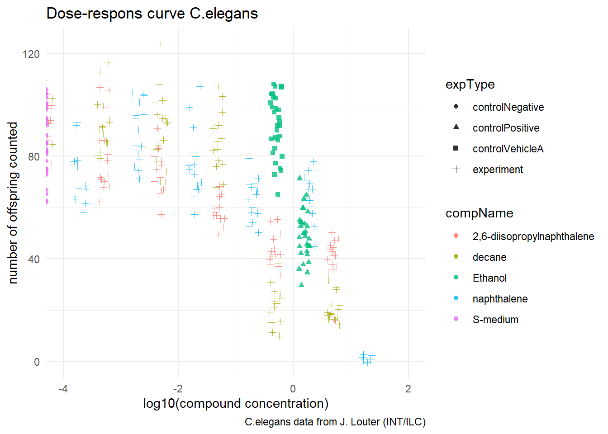

4 C. elegans plate experiment
In this experiment we will create a dosis response curve from de data provided by J. Louter (INT/ILC). in the experiment adult C.elegans nematodes were exposed to varying concentrations of different compounds. after incubation de number of offspringes where counted. The variables RawData (the outcome - number of offspring counted as an integer value, after incubation time), compName (the generic name of the compound/chemical), the compConcentration (the concentration of the compound), and the expType are the most important variables in this dataset.
The first step is to inspect the excel file to see if something stands out. After looking in the excel file I didn’t find anything in particular, so I loaded in the excel file with the following code:
CE_LIQ_FLOW<- read_excel(here::here(
"data",
"opdracht1",
"CE.LIQ.FLOW.062_Tidydata.xlsx"))After loading the excel file the first step is to check the datatypes of each columns.
CE_LIQ_FLOW## # A tibble: 360 × 34
## plateRow plateColumn vialNr dropCode expType expReplicate expName
## <lgl> <lgl> <dbl> <chr> <chr> <dbl> <chr>
## 1 NA NA 1 a experiment 3 CE.LIQ.FLOW.062
## 2 NA NA 1 b experiment 3 CE.LIQ.FLOW.062
## 3 NA NA 1 c experiment 3 CE.LIQ.FLOW.062
## 4 NA NA 1 d experiment 3 CE.LIQ.FLOW.062
## 5 NA NA 1 e experiment 3 CE.LIQ.FLOW.062
## 6 NA NA 2 a experiment 3 CE.LIQ.FLOW.062
## 7 NA NA 2 b experiment 3 CE.LIQ.FLOW.062
## 8 NA NA 2 c experiment 3 CE.LIQ.FLOW.062
## 9 NA NA 2 d experiment 3 CE.LIQ.FLOW.062
## 10 NA NA 2 e experiment 3 CE.LIQ.FLOW.062
## # ℹ 350 more rows
## # ℹ 27 more variables: expDate <dttm>, expResearcher <chr>, expTime <dbl>,
## # expUnit <chr>, expVolumeCounted <dbl>, RawData <dbl>, compCASRN <chr>,
## # compName <chr>, compConcentration <chr>, compUnit <chr>,
## # compDelivery <chr>, compVehicle <chr>, elegansStrain <chr>,
## # elegansInput <dbl>, bacterialStrain <chr>, bacterialTreatment <chr>,
## # bacterialOD600 <dbl>, bacterialConcX <dbl>, bacterialVolume <dbl>, …Here you can see that the compConcentration is out of order. compConcentration is assigned to character data and should be numeric.
this can be easily fixed by the follwing code:
CE_LIQ_FLOW<- CE_LIQ_FLOW %>% convert(dbl(compConcentration))The next step is to display the data using a scatterplot. the goal is to show de different compounds and the varying concentrations. I added the compConcentration on the x-axis and the DataRaw counts on the Y-axis. I assigned a colour to each level in compName and a shape to each level in expType. this way the data would be easy to distinguish from each other.
ggplot(data = CE_LIQ_FLOW, aes(x = compConcentration, y = RawData)) +
geom_point(aes(color = compName,
shape = expType),
size = 1.5,alpha = 0.8)+
labs(title = "Dose-respons curve C.elegans",
caption = "C.elegans data from J. Louter (INT/ILC)",
y = "number of offspring counted",
x = "compound concentration") +
theme_minimal() As you can see in the plot above the data isn’t showing correctly. this is because the X-axis is not correctly ordered. it goes from 0 to 20 but the compound concentrations are mostly way lower than 5. because of this the data in the graph is not shown correctly.
As you can see in the plot above the data isn’t showing correctly. this is because the X-axis is not correctly ordered. it goes from 0 to 20 but the compound concentrations are mostly way lower than 5. because of this the data in the graph is not shown correctly.
To fix this issue i used the log10 of the compound concentration to normalize the data and get a clear graph. I also added the jitter function so that the data point dont overlap.
ggplot(data = CE_LIQ_FLOW, aes(x = log10(compConcentration), y = RawData)) +
geom_jitter(aes(color = compName,
shape = expType),
width = log10(1.3),
size = 1.5,alpha = 0.8) +
coord_cartesian (xlim =c(-4,2)) +
labs(title = "Dose-respons curve C.elegans",
caption = "C.elegans data from J. Louter (INT/ILC)",
y = "number of offspring counted",
x = "log10(compound concentration)") +
theme_minimal()
As you can see the data is much clearer now. However I found it usefull to add a line in the graph to easily show the dosis respons curve of the different compounds.
## with line
ggplot(data = CE_LIQ_FLOW, aes(x = log10(compConcentration), y = RawData, color = compName,
shape = expType)) +
geom_smooth(se= FALSE)+
geom_jitter(width = log10(1.3),
size = 1.5,alpha = 0.8)+
coord_cartesian (xlim =c(-4,2))+
labs(title = "Dose-respons curve C.elegans",
caption = "C.elegans data from J. Louter (INT/ILC)",
y = "number of offspring counted",
x = "log10(compound concentration)") +
theme_minimal()
The positive control for this experiments is ethanol and The negative control for this experiment is S-medium.
After visualization the next step would be t analyze the data to see if there is indeed an effect of different concentrations on offspring count and whether the different compounds have a different curve (IC50). I would analyse the data with the following steps:
The first step would be to check normality. This is done by an Shapiro-Wilk test. After that Check the variances in the groups. This is done by the Levene’s test. The next step is to do an T-test. In this case i would do an unpaired onesided t-test. this is because the experiment is looking for the IC50 wich means that we assume that de compounds have an inhibitory effect on C.elegans so one sided.
For the t-test I would compare each compound separately to the negative controle. By doing this we can determine if there is indeed a significant difference
Add last I normalized the data in such a way that the mean value of the negative control (controlNegative) is exactly equal to 1 and all other values are axpressed as an fraction thereof.
# Filter for negative control
CE_LIQ_FLOW_neg<- CE_LIQ_FLOW %>% filter(expType == "controlNegative" )
# determine average negative control
mean(CE_LIQ_FLOW_neg$RawData)## [1] 85.9#group and summerize
sum_CE_LIQ_FLOW<- CE_LIQ_FLOW %>% group_by(expType, compName, compConcentration ) %>% summarize(mean = mean(RawData, na.rm = TRUE))
sum_CE_LIQ_FLOW## # A tibble: 22 × 4
## # Groups: expType, compName
## # [6]
## expType compName compConcentration mean
## <chr> <chr> <dbl> <dbl>
## 1 controlNegative S-medium 0 85.9
## 2 controlPositive Ethanol 1.5 49.4
## 3 controlVehicleA Ethanol 0.5 91.8
## 4 experiment 2,6-diisopropylnaphthalene 0.0000499 89.3
## 5 experiment 2,6-diisopropylnaphthalene 0.000499 83.1
## 6 experiment 2,6-diisopropylnaphthalene 0.00499 75.1
## 7 experiment 2,6-diisopropylnaphthalene 0.0499 59
## 8 experiment 2,6-diisopropylnaphthalene 0.499 43.3
## 9 experiment 2,6-diisopropylnaphthalene 4.99 40.3
## 10 experiment decane 0.0000499 89.8
## # ℹ 12 more rows# plot data and divide y-axis mean by avarage negative controle
ggplot(data = sum_CE_LIQ_FLOW, aes(x = log10(compConcentration), y = (mean/85.9))) +
geom_jitter(aes(color = compName,
shape = expType),
width = log10(1.3),
size = 3,alpha = 0.8)+
coord_cartesian (xlim =c(-4,2), ylim =c(0,1.2))+
labs(title = "Dose-respons curve C.elegans",
caption = "C.elegans data from J. Louter (INT/ILC)",
y = "average offsprings as fraction \nof negative control",
x = "log10(compound concentration)") +
theme_minimal()
again I made the same plot with a line to easily show the dosis respons curve of the different compounds.
## met line
ggplot(data = sum_CE_LIQ_FLOW, aes(x = log10(compConcentration), y = (mean/85.9), color = compName,
shape = expType)) +
geom_smooth()+
geom_jitter(width = log10(1.3),
size = 3,alpha = 0.8)+
coord_cartesian (xlim =c(-4,2), ylim =c(0,1.2))+
labs(title = "Dose-respons curve C.elegans",
caption = "C.elegans data from J. Louter (INT/ILC)",
y = "average offsprings as fraction \nof negative control",
x = "log10(compound concentration)") +
theme_minimal()
By normalizing against the negative control, it is easy to see whether a compound has an effect on the amount of c.elegans. In addition, this is useful because the negative control is “normal” and this should have no effect on the c.elegans. Therefor the negative controle is equal to one.